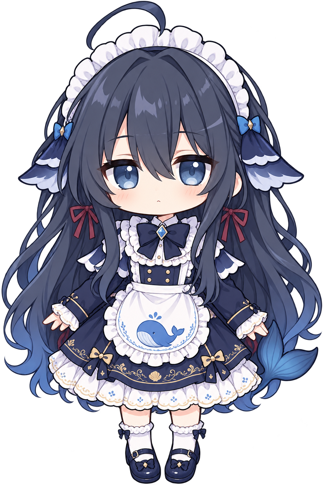
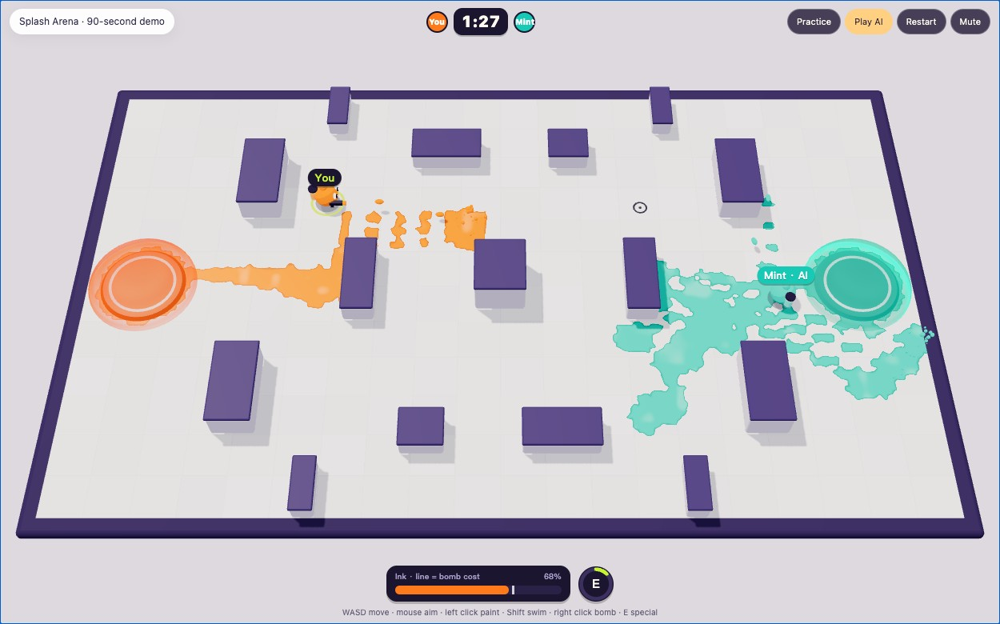

a little more than a chatbot
meet Yuki.
让一个 AI，慢慢有了自己的感官。
碰一碰她的眼睛、耳朵，
看看我给她接上了什么。

local “splatoon-like” game
leave a little colour.
一场不用等朋友上线的泼色对战。

Splash
Arena.
Arena.
涂地。潜游。把整个场地变成你的颜色。
单人练习 / AI 对手 · 无需安装WASD 移动 · 鼠标瞄准 / 左键涂色 · Shift 潜游补墨